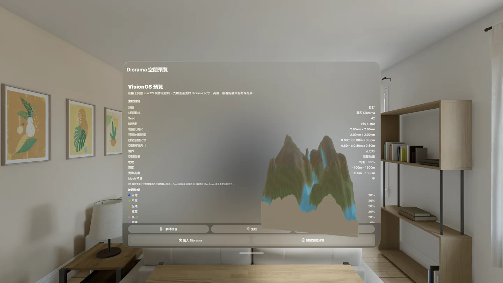

DioramaMapMaker
DioramaMapMaker 是一款用來產生空間地形微縮景觀的創作工具，適合 Apple Vision Pro、visionOS App、Xcode 專案、Reality Composer Pro、Blender 與其他 3D 工作流程。
它協助創作者定義地形比例尺、高度範圍、生態群系比例、水域覆蓋、地貌意圖、邊界形狀、材質風格與空間資產尺寸，並把這些輸入轉成完整的 diorama package。
- 可用裝置
- iPhone / iPad / Mac / Apple Vision Pro
- 下載方式
- 付費下載

{kind=link}

完整地形資產包
每個產生的 package 可包含地形資料、高度圖、生態群系圖、診斷疊圖、材質貼圖、OpenUSD 檔案與可交付的 USDZ 資產，讓設計與開發流程能直接銜接。
macOS 製作工作區
macOS App 已在 App Store 上架，是主要的生產工作區，提供詳細地形控制、2D 與 3D 預覽、材質風格預覽、匯出驗證、package 健康檢查與貼圖替換工具。使用者可以產生、改善、檢查並匯出 diorama 資產，而不必手動翻找 package 內容。
Apple Vision Pro 空間檢視
visionOS App 則用於 Apple Vision Pro 上的空間檢視與輕量創作。使用者可以開啟 .diorama package，在空間中檢查地形，用手勢移動與縮放模型，套用 preset，重新產生簡單變化，並透過系統分享表匯出 package 或 USDZ 檔案。
適合的工作流程
- 早期空間體驗設計
- 環境原型與沉浸式場景規劃
- 教育用地形模型
- 概念視覺化
- 設計與開發工具之間的 3D 資產交付
實際案例：Taiwan Animals
Taiwan Animals 的 visionOS 版本已經上架，App 裡的 immersive environment 使用 DioramaMapMaker 的 macOS 版本產生台灣地景，再接進 visionOS 教材體驗。這是 DioramaMapMaker 從工具、資產輸出到實際 App 場景的第一個完整工作流案例。
設計理念
DioramaMapMaker 不把地圖視為平面圖片，而是把它轉成一個空間物件：有比例、有材質、可檢查、可匯出，並能成為 3D 或 visionOS 工作流程的一部分。
DioramaMapMaker
DioramaMapMaker is a creative tool for generating spatial terrain dioramas for Apple Vision Pro, visionOS apps, Xcode projects, Reality Composer Pro, Blender, and other 3D workflows.
It helps creators define terrain scale, elevation range, biome ratios, water coverage, landform intent, boundary shape, material style, and spatial asset size, then turns those inputs into a complete diorama package.
- Devices
- iPhone / iPad / Mac / Apple Vision Pro
- Download
- Paid download

{kind=link}
Complete Diorama Packages
Each generated package can include terrain data, heightmaps, biome maps, diagnostic overlays, material textures, OpenUSD files, and USDZ assets ready for handoff between design and development workflows.
macOS Production Workspace
The macOS app is now available on the App Store and is designed as the main production workspace. It provides detailed terrain controls, 2D and 3D previews, material style previews, export validation, package health checks, and texture replacement tools. Users can generate, improve, inspect, and export diorama assets without manually digging through package contents.
Spatial Review on Apple Vision Pro
The visionOS app is built for spatial review and lightweight creation directly on Apple Vision Pro. Users can open .diorama packages, inspect terrain in space, move and scale the model with gestures, apply presets, regenerate simple variations, and export packages or USDZ files through the system share sheet.
Useful For
- Early-stage spatial experience design
- Environment prototyping and immersive scene planning
- Educational terrain models
- Concept visualization
- Asset handoff between design and development tools
Real Workflow: Taiwan Animals
The visionOS version of Taiwan Animals is now available, and its immersive environment uses a Taiwan-inspired landscape generated with DioramaMapMaker for macOS. It is the first complete workflow example showing DioramaMapMaker moving from tool, to exported terrain asset, to a real app experience.
Design Idea
Instead of treating a map as a flat image, DioramaMapMaker turns it into a spatial object: scaled, textured, inspectable, exportable, and ready to become part of a 3D or visionOS workflow.